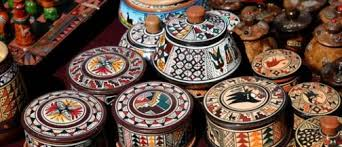
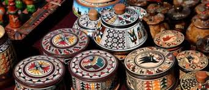

Guia turistica virtual AREQUIPA |
|
|  |

Guia turistica virtual AREQUIPA |
|
|  |
Duración: 01 Día
Salidas Diarias
SIC: 02:30 AM
PRIVADO: 03:30AM
Los recogemos a las 3:00am, para dirigirnos hacia Chivay, aproximadamente 3 horas con 30 minutos, por la carretera actual de Arequipa, Juliaca, Puno, Cusco, hasta llegar a Pampa Cañahuas, ahí tomamos el desvió para luego llegar a Chivay, el pueblo más importante en el Valle del Colca, donde tomaremos nuestro desayuno, y después saldremos por un camino rústico hacia la Cruz del Condor, disfrutando de la bonita vista del valle del Colca, con sus terrazas pre-incas, el viaje dura una hora y media hasta la Cruz del Cóndor, desde donde se puede observar el Cañón del Colca y el vuelo de los Cóndores.
Después de haber disfrutado del Cañón del Colca y el vuelo del Cóndor retornamos por el mismo camino hacia Chivay, pero haremos algunas paradas, la primera parada es en el pueblo de Pinchollo (Mirador de Wayrapunko). Donde se tiene una magnifica vista de todo el valle del Colca.
La Segunda parada es el mirador de Antahuilque donde se puede observar las terrazas en forma de anfiteatro y las lagunas misteriosas del valle del Colca.
La cuarta parada se visita el pueblo de Maca. La quinta parada es opcional, el pueblo de Yanque con su iglesia la más hermosa del valle del Colca. Luego se retorna a Chivay alrededor del medio día. Donde tendremos tiempo para almorzar. Después del almuerzo, regresaremos hacia Arequipa, llegando alrededor de las 17:00 hrs, dejándolos en sus respectivos hoteles.
EL PROGRAMA INCLUYE:
- Movilidad
- Guía profesional bilingüe
- Desayuno